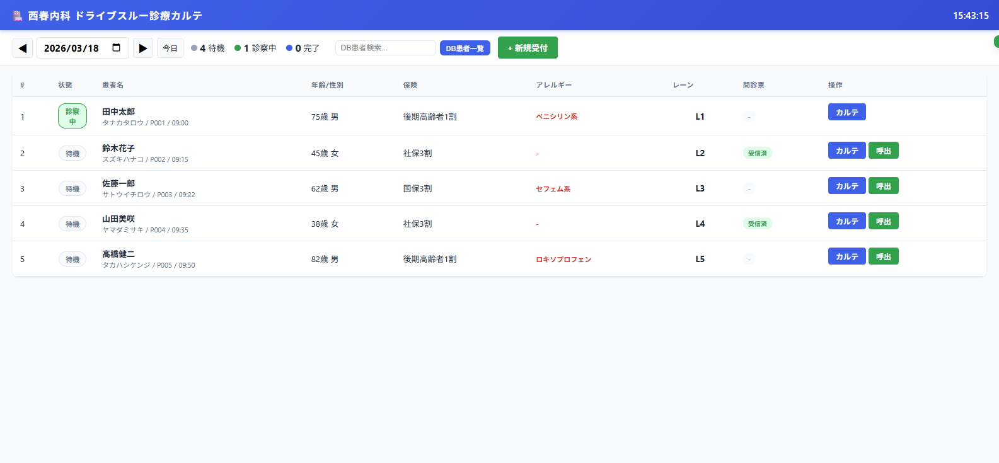
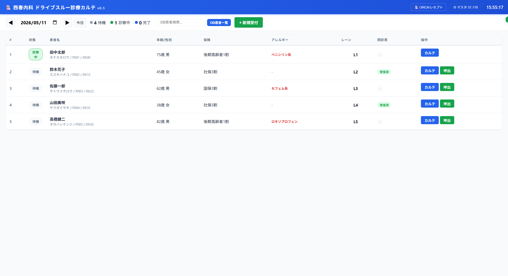
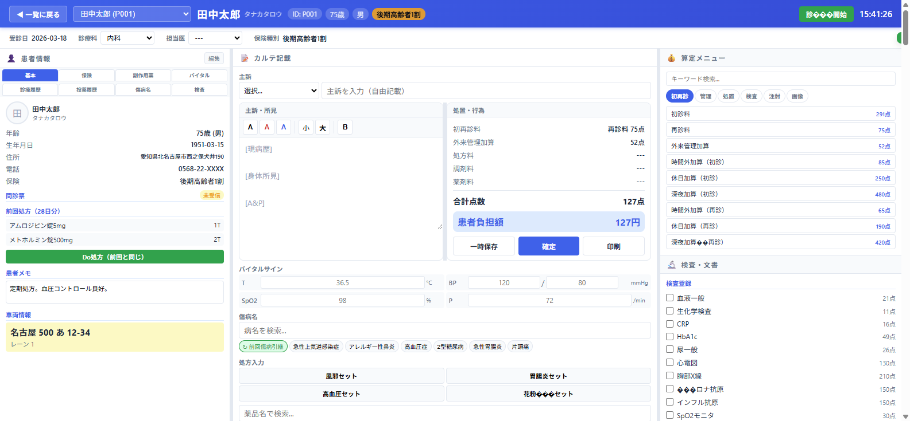
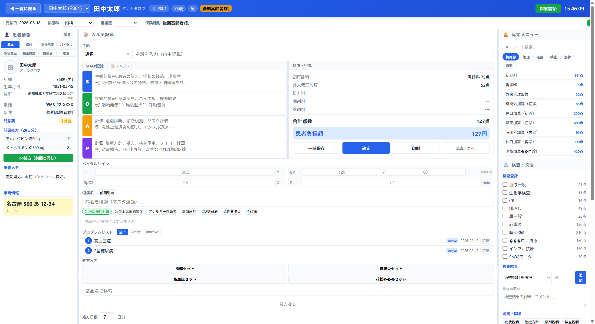
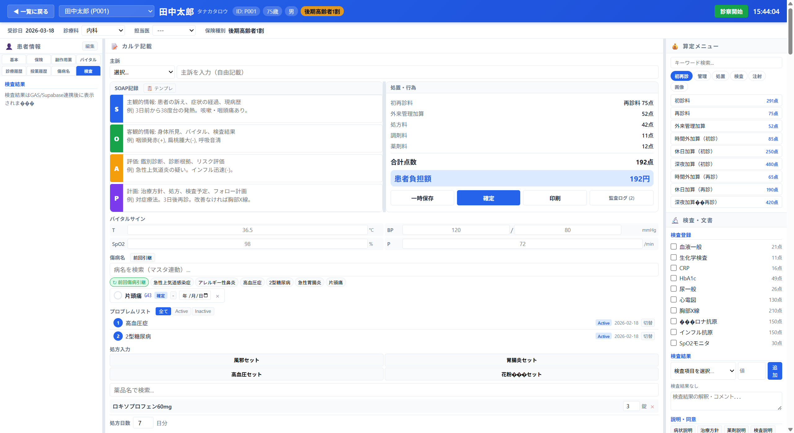
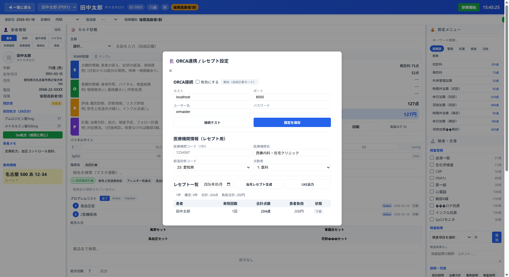
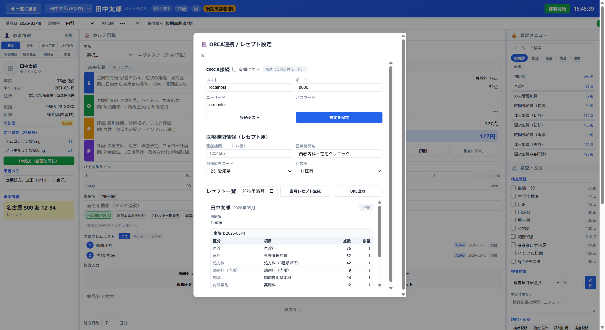

西春内科・在宅クリニック ドライブスルー診療システム




| 項目 | v0.4 | v0.5 |
|---|---|---|
| 傷病名登録 | 固定リストから選択（約20件） | NEW 支払基金マスタ27,649件から検索 + 固定リスト |
| コード体系 | なし | NEW レセ電算コード + ICD-10 自動付与 |
| 主病フラグ | なし | NEW 主病名の指定が可能 |
| 転帰管理 | なし | NEW 治癒/中止/転医/死亡 の転帰記録 |
| プロブレムリスト | なし | NEW Active/Inactive/Resolved のステータス管理 |
| 開始日・終了日 | なし | NEW 傷病名ごとに日付管理 |
| 機能 | v0.4 | v0.5 |
|---|---|---|
| アレルギー×処方チェック | 表示のみ（アレルギー欄に赤字表示） | SAFETY 処方追加時に自動チェック。禁忌該当で確認ダイアログ表示 |
| 重複処方チェック | なし | SAFETY 同一薬剤の重複追加を警告 |
| 監査証跡 | なし | NEW 全操作を日時・操作者・内容で記録。一覧表示可能 |
| 記録対象 | — | 処方追加/削除、セット適用、Do処方、一時保存、確定、禁忌警告確認 |



| 機能カテゴリ | v0.4 | v0.5 |
|---|---|---|
| 診療録本文 | ||
| 記録形式 | 自由記載（リッチテキスト） | SOAP 4セクション + 自由記載（後方互換） |
| テンプレート | なし | バイタル・主訴から自動生成 |
| 傷病名管理 | ||
| 検索ソース | 固定リスト（約20件） | 支払基金マスタ 27,649件 + 固定リスト |
| コード | なし | レセ電算コード + ICD-10 |
| 主病/転帰 | なし | 主病フラグ + 転帰（治癒/中止/転医/死亡） |
| プロブレムリスト | なし | Active/Inactive/Resolved 管理 |
| 処方 | ||
| 薬剤検索 | 固定リスト（約20件） | 固定リスト + マスタ 19,337件 |
| 安全チェック | なし | 禁忌チェック + 重複チェック |
| 検査 | ||
| 検査登録 | チェックボックスのみ | チェックボックス + 結果値入力 |
| 結果記録 | なし | 20項目、基準値H/L判定付き |
| 解釈コメント | なし | 自由記載欄 |
| 説明・同意 | ||
| 記録 | なし | 5種類のクイック記録 + 詳細メモ |
| 監査・法的要件 | ||
| 監査証跡 | なし | 全操作を日時・操作者で自動記録 |
| 修正履歴 | なし | 監査ログで追跡可能 |
| ORCA連携・レセプト | ||
| レセプト管理 | なし | 自動生成+IndexedDB永続化 |
| ORCA API | なし | 患者/受付/診療行為/傷病名/請求 |
| UKE出力 | なし | レセプト電算形式エクスポート |
| 点数自動算定 | 画面上の概算のみ | 80+項目の正式点数コード |
| マスタデータ | ||
| データソース | ハードコード | 支払基金CSVマスタ（IndexedDB） |
| 総件数 | 約60件 | 57,178件 |
専門家から指摘された電子カルテ10要件に対する対応状況
| 要件 | v0.4 | v0.5 | 状態 |
|---|---|---|---|
| 1. 診療録本文（SOAP） | 自由記載のみ | SOAP 4セクション | 対応済 |
| 2. 医学的判断の記録 | なし | A(Assessment)セクション | 対応済 |
| 3. 経過記録 | 過去カルテ参照のみ | SOAP + プロブレムリスト | 対応済 |
| 4. プロブレム管理 | なし | プロブレムリスト実装 | 対応済 |
| 5. 検査結果の解釈 | なし | 結果値+基準値判定+解釈欄 | 対応済 |
| 6. 説明・同意記録 | なし | 5種類のクイック記録 | 対応済 |
| 7. 文書管理 | 紹介状/診断書/処方箋 | 同左（変更なし） | 維持 |
| 8. 監査証跡 | なし | 全操作の自動記録 | 対応済 |
| 9. 法的な診療録要件 | 日付・医師名のみ | +監査証跡+修正履歴 | 対応済 |
| 10. 医療安全 | アレルギー表示のみ | 禁忌チェック+重複チェック+アラート | 対応済 |